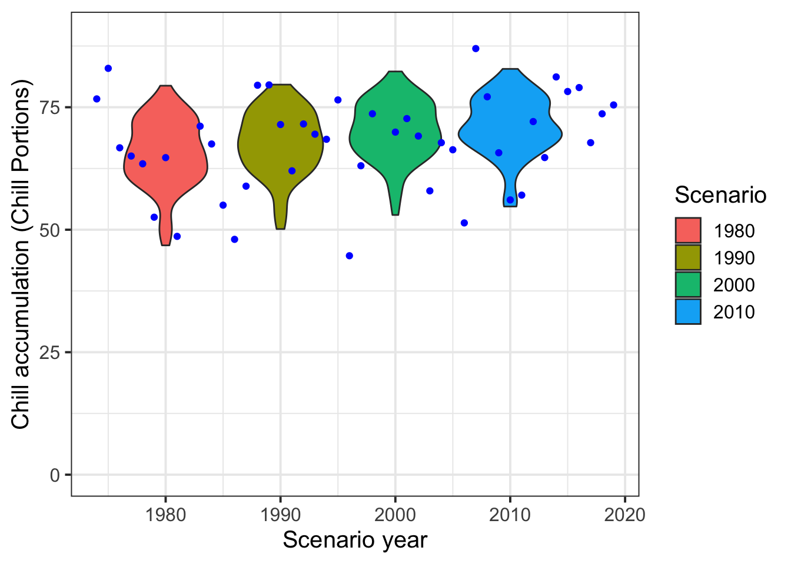
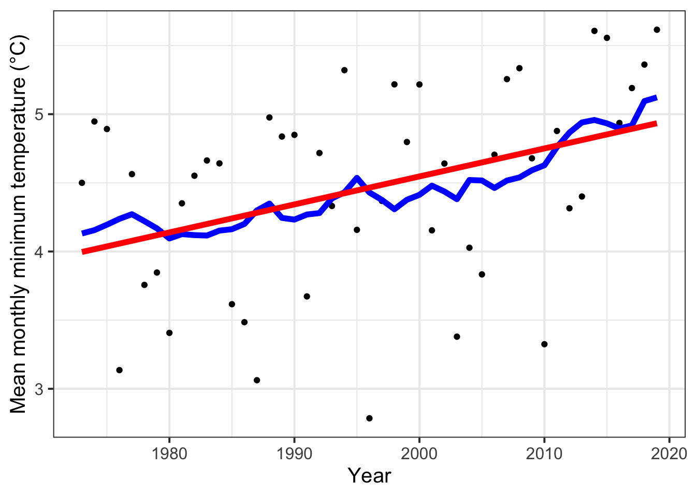
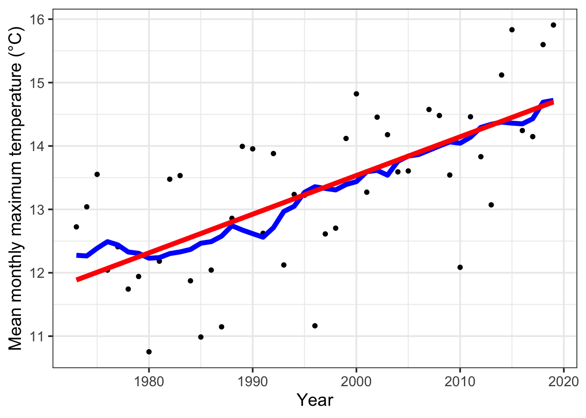

Chapter 11 Historic Temperature Scenario
11.1 Task 1
For the location you chose for previous exercises, produce historic temperature scenarios representing several years of the historic record (your choice)
A weather generator can generate weather scenarios that are based on previously inputted calibration weather data. For example, you can input weather records for a specific location into the generator for a period of 10 years and the generated scenarios will be strongly based on the calibration weather data. It is often desirable to represent the weather events of the past for a specific time period. How can this be implemented?
If a scenario is to be created that represents the period from 1973 to 2019, the median could be chosen, in this case the year 1996, and a simulation could be carried out using the generator based on that. The consequence would be that you would get a representation of the weather events around the year 1996. However, this does not adequately reflect the change in climate from 1980 to 2010. It would be much more interesting to examine how the climate developed from 1980 to 2010. To do this, you could consider the years 1980, 1990, 2000, and 2010.
Initially, weather data for the location Leszno is loaded, as previously described in the previous chapter. This time, the data covers the period from 1973 to 2019.
# station_list = handle_gsod(action = "list_stations", location = c(16.5, 51.39),
# time_interval=c(1973,2019))
# write.csv(station_list, "weather_data/Leszno_weather_raw/station_list_close_leszno_to_fill_gaps_raw.csv",
# row.names = FALSE)
# Leszno_weather_raw<-handle_gsod(action="download_weather",
# location=station_list$chillR_code[7],
# time_interval = c(1973,2019),
# station_list = station_list)
#dir.create("weather_data/Leszno_weather_raw")
#write.csv(Leszno_weather_raw,"weather_data/Leszno_weather_raw/Leszno_weather_raw.csv",row.names=FALSE)
Leszno_weather_raw =
read.table("weather_data/Leszno_weather_raw/Leszno_weather_raw.csv",
header = TRUE, sep = ",")
Leszno_weather_raw_station_list =
read.table("weather_data/Leszno_weather_raw/station_list_close_leszno_to_fill_gaps_raw.csv",
header = TRUE, sep = ",")
# Leszno_weather<-handle_gsod(Leszno_weather_raw)
# detect many gaps
# fix_weather(Leszno_weather)$QC
# positions_in_station_list<-c(2,4,7,12,21)
# patch_weather_l<-list()
# fill gaps for 1973 to 2019
# for(i in 1:length(positions_in_station_list))
# {
# patch_weather_l[[i]] <-
# handle_gsod(
# handle_gsod(
# action = "download_weather",
# location = Leszno_weather_raw_station_list$chillR_code[positions_in_station_list[i]],
# time_interval = c(1973, 2019)
# )
# )[[1]]$weather
# names(patch_weather_l)[i] <-
# Leszno_weather_raw_station_list$STATION.NAME[positions_in_station_list[i]]
# }
# patched_l<-patch_daily_temperatures(weather = Leszno_weather,
# patch_weather = patch_weather_l)
#write.csv(fix_weather(patched_l)$QC,"weather_data/Leszno_weather_raw/QC_Check.csv")
QC = read.table("weather_data/Leszno_weather_raw/QC_Check.csv", header = TRUE, sep =",")
kable(head(QC),
caption="Filled gaps from 1973 to 2019 QC ") %>%
kable_styling("striped", position = "left", font_size = 10)%>%
scroll_box(width = "100%")| X | Season | End_year | Season_days | Data_days | Missing_Tmin | Missing_Tmax | Incomplete_days | Perc_complete |
|---|---|---|---|---|---|---|---|---|
| 1 | 1972/1973 | 1973 | 365 | 365 | 2 | 2 | 2 | 99.5 |
| 2 | 1973/1974 | 1974 | 365 | 365 | 0 | 0 | 0 | 100.0 |
| 3 | 1974/1975 | 1975 | 365 | 365 | 1 | 1 | 1 | 99.7 |
| 4 | 1975/1976 | 1976 | 366 | 366 | 0 | 0 | 0 | 100.0 |
| 5 | 1976/1977 | 1977 | 365 | 365 | 0 | 0 | 0 | 100.0 |
| 6 | 1977/1978 | 1978 | 365 | 365 | 0 | 0 | 0 | 100.0 |
#Leszno_Sc<-fix_weather(patched_l)
#Leszno_Sc_temps<-Leszno_Sc$weather
#write.csv(Leszno_Sc_temps, "weather_data/Leszno_weather_raw/Leszno_Sc_temps.csv")
Leszno_Sc_temps = read.table("weather_data/Leszno_weather_raw/Leszno_Sc_temps.csv", header = TRUE, sep =",")
kable(head(Leszno_Sc_temps),
caption="Filled gaps from 1973 to 2019 ") %>%
kable_styling("striped", position = "left", font_size = 10)%>%
scroll_box(width = "100%")| X | YEARMODA | DATE | Year | Month | Day | Tmin | Tmax | Tmean | Prec | Tmin_source | Tmax_source | no_Tmin | no_Tmax |
|---|---|---|---|---|---|---|---|---|---|---|---|---|---|
| 1 | 19730101 | 1973-01-01 12:00:00 | 1973 | 1 | 1 | -1.0000000 | 5.0000000 | 1.222222 | 0 | NA | NA | FALSE | FALSE |
| 2 | 19730102 | 1973-01-02 12:00:00 | 1973 | 1 | 2 | -5.2964918 | 2.5814462 | NA | NA | daily_LEGNICA | daily_LEGNICA | FALSE | FALSE |
| 3 | 19730103 | 1973-01-03 12:00:00 | 1973 | 1 | 3 | -8.2964918 | -1.4185538 | NA | NA | daily_LEGNICA | daily_LEGNICA | FALSE | FALSE |
| 4 | 19730104 | 1973-01-04 12:00:00 | 1973 | 1 | 4 | -3.2964918 | -0.6609859 | NA | NA | daily_LEGNICA | daily_STRACHOWICE | FALSE | FALSE |
| 5 | 19730105 | 1973-01-05 12:00:00 | 1973 | 1 | 5 | -1.2964918 | -0.4185538 | NA | NA | daily_LEGNICA | daily_LEGNICA | FALSE | FALSE |
| 6 | 19730106 | 1973-01-06 12:00:00 | 1973 | 1 | 6 | -0.2964918 | 1.5814462 | NA | NA | daily_LEGNICA | daily_LEGNICA | FALSE | FALSE |
Firstly, a realistic temperature scenario for 1980 must be created, based on actual observed data. This can be done using the function
temperature_scenario_from_record(). The previously loaded and complemented weather data is passed to the argumentweather, and the argumentyearis set to 1980.
scenario_1980 =
temperature_scenario_from_records(weather=Leszno_Sc_temps,year=1980)
kable(scenario_1980$'1980'$data, caption = "Temperature Scenario 1980") %>%
kable_styling("striped", position = "left",font_size = 10)%>%
scroll_box(width = "100%")| Tmin | Tmax |
|---|---|
| -4.3191108 | 0.7088587 |
| -4.2522096 | 1.6761109 |
| 0.0017841 | 7.5296426 |
| 2.4312213 | 11.9301075 |
| 7.5154979 | 17.9306386 |
| 10.5285472 | 20.8788868 |
| 12.0419278 | 22.1888514 |
| 11.8209322 | 22.4400381 |
| 8.7624918 | 18.5001354 |
| 4.9667784 | 12.8319967 |
| 0.9569230 | 6.6452393 |
| -1.8776562 | 2.8248863 |
We obtain a temperature scenario containing mean monthly high and low values. This is based on the observed data that was actually measured in 1980. Table ‘Temperature Scenario 1980’ shows this. Since we also want to consider the years 1990, 2000, and 2010, we include them as well.
all_past_scenarios =
temperature_scenario_from_records(weather = Leszno_Sc_temps,
year = c(1980, 1990, 2000, 2010))If the weather generator were to be run based on these temperature scenarios (1980, 1990, 2000, 2010), it would produce absolute temperature scenarios. However, as mentioned earlier, it is much more interesting to compare how the climate has changed relatively over time. For this purpose, a year can be used as a baseline. In this case, 1996 is chosen as it represents the median of the time interval. The function
temperature_scenario_baseline_adjustment()can be used to create a relative temperature scenario that can later be passed to the functiontemperature_generation().However, first the year 1996 must be generated:
After this has been done, the relative scenarios can be created. To do this, the function
temperature_scenario_baseline_adjustment()is passed the previously generated scenario for the year 1996 to the argumentsbaselineandtemperature_scenario, and the variableall_past_scenarios, in which the scenarios for 1980, 1990, 2000, and 2010 are stored.
adjusted_scenarios=
temperature_scenario_baseline_adjustment(
baseline=scenario_1996,
temperature_scenario = all_past_scenarios)Now we can pass all of the information to the function
temperature_generation().
# all_past_scenario_temps<-temperature_generation(
# weather=Leszno_Sc_temps,
# years=c(1973,2019),
# sim_years=c(2001,2100),
# temperature_scenario = adjusted_scenarios)This takes a lot of time, so the scenarios are saved using the function
save_temperature_scenarios()and immediately reloaded using the functionload_temperature_scenarios().
# save_temperature_scenarios(all_past_scenario_temps, "All_Scenarios_Leszno","all_past_scenario_temps")
all_past_scenario_temps=
load_temperature_scenarios("All_Scenarios_Leszno","all_past_scenario_temps")The function
tempResponse_daily_list()can now be used to calculate the historic chill.
# chill_hist_scenario_list =
# tempResponse_daily_list(all_past_scenario_temps,
# latitude=51.39,
# Start_JDay = 305,
# End_JDay = 59)
# save_temperature_scenarios(chill_hist_scenario_list, "chill_hist_scenario_list","chill_hist_scenario_list")
chill_hist_scenario_list=
load_temperature_scenarios("chill_hist_scenario_list","chill_hist_scenario_list")11.2 Task 2
Produce chill distributions for these scenarios and plot them.
Now the chill and temperature development over the years can be plotted graphically.
scenarios<-names(chill_hist_scenario_list)[1:4]
all_scenarios<-chill_hist_scenario_list[[scenarios[1]]]
all_scenarios[,"scenario"]<-as.numeric(scenarios[1])
for (sc in scenarios[2:4])
all_scenarios =
rbind(all_scenarios,
cbind(chill_hist_scenario_list[[sc]],scenario=as.numeric(sc)))
all_scenarios<-all_scenarios[which(all_scenarios$Perc_complete==100),]
actual_chill<-tempResponse_daily_list(Leszno_Sc_temps,latitude=50.9,
Start_JDay = 305,
End_JDay = 59)[[1]]
actual_chill<-actual_chill[which(actual_chill$Perc_complete==100),]
ggplot(data=all_scenarios,aes(scenario,Chill_Portions,
fill=factor(scenario))) +
geom_violin() +
ylab("Chill accumulation (Chill Portions)") +
xlab("Scenario year") +
theme_bw(base_size=15) +
ylim(c(0,90)) +
geom_point(data=actual_chill,
aes(End_year,Chill_Portions,fill="blue"),
col="blue",show.legend = FALSE) +
scale_fill_discrete(name="Scenario",
breaks = unique(all_scenarios$scenario)) 
The results regarding the expected chill hours can be very well represented in a violin plot. Each year on the X axis (1980,1990,2000,2010) contains 100 years of simulations of chill hours. The relative reference to the year 1996 is considered. This explains the slight increase in chill hours. The reason for this is that at temperatures below zero degrees generally less chill hours occur. Since it was colder in 1980, less chill hours can be expected on the climate basis of that time than in 1990 or 2000 or 2010. At the end plots are created which represent the Tmin Temperature and Tmax Temperature.
temperature_means =
data.frame(Year=min(Leszno_Sc_temps$Year):max(Leszno_Sc_temps$Year),
Tmin=aggregate(Leszno_Sc_temps$Tmin,FUN="mean",
by=list(Leszno_Sc_temps$Year))[,2],
Tmax=aggregate(Leszno_Sc_temps$Tmax,FUN="mean",
by=list(Leszno_Sc_temps$Year))[,2])
temperature_means[,"runn_mean_Tmin"] = runn_mean(temperature_means$Tmin,15)
temperature_means[,"runn_mean_Tmax"] = runn_mean(temperature_means$Tmax,15)
Tmin_regression =
lm(Tmin~Year, temperature_means)
temperature_means[,"regression_Tmin"] =
Tmin_regression$coefficients[1]+
Tmin_regression$coefficients[2]*temperature_means$Year
Tmax_regression =
lm(Tmax~Year, temperature_means)
temperature_means[,"regression_Tmax"] =
Tmax_regression$coefficients[1]+
Tmax_regression$coefficients[2]*temperature_means$Year
ggplot(temperature_means,aes(Year, Tmin)) +
geom_point() +
geom_line(data=temperature_means,aes(Year, runn_mean_Tmin),lwd=2,col="blue") +
geom_line(data=temperature_means,aes(Year, regression_Tmin),lwd=2,col="red") +
theme_bw(base_size=15) +
ylab("Mean monthly minimum temperature (°C)")
ggplot(temperature_means,aes(Year, Tmax)) +
geom_point() +
geom_line(data=temperature_means,aes(Year, runn_mean_Tmax),lwd=2,col="blue") +
geom_line(data=temperature_means,aes(Year, regression_Tmax),lwd=2,col="red") +
theme_bw(base_size=15) +
ylab("Mean monthly maximum temperature (°C)")